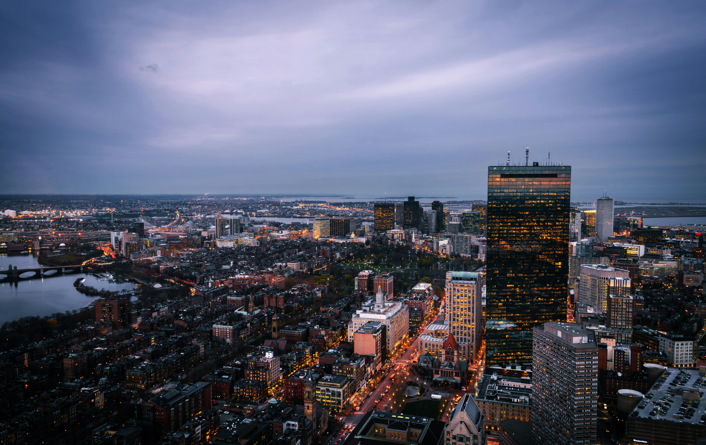

Boston, capital del estado de Massachusetts, es una ciudad vibrante y cosmopolita con una rica historia y cultura. Fundada en 1630 por colonos puritanos, Boston jugó un papel fundamental en la Revolución Americana. Algunos eventos históricos clave que tuvieron lugar en Boston incluyen la Masacre de Boston, el Motín del Té y la Batalla de Bunker Hill.La ciudad alberga una gran cantidad de instituciones educativas de renombre mundial, como la Universidad de Harvard, el Instituto Tecnológico de Massachusetts (MIT) y la Universidad de Boston. Boston también es un centro de innovación y emprendimiento, con una gran cantidad de empresas de tecnología y biotecnología.
Además de su rica historia y cultura, Boston ofrece una variedad de atracciones para visitantes. Algunos de los lugares más populares incluyen el Freedom Trail, el Fenway Park, el Museo de Bellas Artes y el Acuario de Nueva Inglaterra. La ciudad también cuenta con una amplia gama de restaurantes, tiendas y lugares de entretenimiento.Boston es una ciudad diversa y multicultural. La población de la ciudad está compuesta por personas de todo el mundo, lo que se refleja en la variedad de idiomas, religiones y tradiciones que se celebran en Boston. La ciudad tiene una fuerte comunidad latina, así como una gran población de origen asiático, europeo y africano.
Boston es una ciudad vibrante y llena de vida. Hay algo para todos en Boston, desde amantes de la historia y la cultura hasta aficionados al deporte y gourmets. La ciudad ofrece una variedad de eventos y festivales durante todo el año, lo que la convierte en un destino ideal para visitantes de todas las edades.Es una ciudad vibrante y llena de vida. Hay algo para todos en Boston, desde amantes de la historia y la cultura hasta aficionados al deporte y gourmets. La ciudad ofrece una variedad de eventos y festivales durante todo el año, lo que la convierte en un destino ideal para visitantes de todas las edades. Regresar.